Tenho 8+ anos moldando experiências em fintechs de alto crescimento como Nubank e PicPay. Começo pelo conteúdo, mas minha atuação atravessa arquitetura de informação, estratégia de produto e design de interação.
Acredito que linguagem bem desenhada é infraestrutura: reduz fricção, constrói confiança e move comportamento. Quando não estou desenhando, estou escrevendo ficção científica ou mentorando designers em início de carreira.
I have 8+ years shaping experiences at high-growth fintechs like Nubank and PicPay. I start with content, but my work spans information architecture, product strategy, and interaction design.
I believe well-designed language is infrastructure: it reduces friction, builds trust, and moves behavior. When I'm not designing, I'm writing science fiction or mentoring early-career designers.
Trabalho com ownership end-to-end desde o problema até o impacto, transitando entre decisões de design desde UI até focadas em content design — a depender do projeto.
I work with end-to-end ownership from the problem to impact, moving between design decisions from UI to content design — depending on the project.
Sistemas de conteúdo
Content systems
Crio guidelines e governança que escalam com o produto e contribuem para o design system.
I create guidelines and governance that scale with the product and contribute to the design system.
AI + processo de design
AI + design process
Uso ferramentas de IA para acelerar ideação e validação, contribuir para sistemas de design e ajudar times a tomarem decisões mais rápidas e fundamentadas.
I use AI tools to accelerate ideation and validation, contribute to design systems, and help teams make faster, better-grounded decisions.
Cross-funcional
Cross-functional
Colaboro de perto com Produto, outros Designers e Operações para explorar o espaço do problema e alinhar decisões de design.
I collaborate closely with Product, other Designers, and Operations to explore the problem space and align design decisions.
Referências
References
"Ana é uma Content Designer genuinamente apaixonada por seus clientes. Em Insurance, mais de uma vez desafiou decisões de negócio mostrando a perspectiva do cliente — e conseguiu mudar aspectos críticos do produto."
"Ana is a Content Designer who is genuinely passionate about her customers. In Insurance, more than once, she challenged business decisions by showing the customer perspective — and was able to change critical product aspects."
Ivan ToledoDesign Manager II · iFood (ex-Nubank)Design Manager II · iFood (formerly Nubank)
"A Ana além de uma pessoa incrível, é uma profissional exemplar. Ela trata assuntos que demandam atenção com muita leveza e determinação. Os processos que ela constrói são super completos."
"Ana is not only an incredible person but an exemplary professional. She handles demanding topics with ease and determination. The processes she builds are very thorough."
Sistemas complexosComplex systemsArquitetura de informaçãoInformation architectureFerramenta internaInternal toolingDupla personaDual personaE2E DesignEstratégia de conteúdoContent strategyB2B
8 minutos de leitura8 min read
Não dava para resolver a experiência de quem vende sem antes resolver a de quem atende
You can't fix the experience of the person selling without first fixing the experience of the person supporting them
No Nubank PJ, as contestações de venda cresciam na mesma velocidade que o negócio: 1.064 casos em um único mês, R$ 2,18 milhões parados, e o time interno gastando 120 horas por mês para produzir 58 defesas. E o pior: tudo isso sem o sistema dar visibilidade das informações para o cliente ou para o agente interno de atendimento. Completamente no escuro, o cliente PJ só via que algo estava acontecendo quando um débito era lançado na sua conta; e isso, naturalmente estressava os setores de atendimento.
Após discovery e validações, desenhei a jornada dos dois lados (cliente e agente interno) partindo de uma premissa que defendi com o time: não dá para resolver a experiência de quem vende sem antes resolver a de quem atende.
At Nubank PJ, sales disputes were growing as fast as the business: 1,064 cases in a single month, R$ 2.18 million on hold, and the internal team spending 120 hours a month to produce 58 defenses — with no visibility for either the customer or the support agent.
EmpresaCompanyNubank · PJ Payments
PeríodoPeriod2025
PapelRoleSenior Content Designer, com duplo chapéu formalizado de content e product designSenior Content Designer, with a formalized dual hat of content and product design
EscopoScopeDiscovery, arquitetura de informação, desenho da ferramenta interna, régua de comunicação, guidelines de linguagem e handoff da iniciativaDiscovery, information architecture, internal tool design, communication ruler, language guidelines and initiative handoff
This case is being rewritten. The full text is available in Portuguese while the English version is in progress — switch to PT above to read it.
Contexto
Contestação de venda é quando o comprador questiona uma compra junto a bandeira do cartão. Para quem vendeu, significa ver o dinheiro de uma venda que já era sua sumir da conta.
Três atores externos participam de cada caso (o banco emissor, a bandeira e a adquirente), a informação atravessava todos eles antes de chegar ao Nubank e “morria” escondida em um webhook, que era subutilizado.
O resultado era um processo que consumia muito e entregava pouco:
−2,17
tNPS na medição que orientou o projeto
~40%
dos vendedores afetados entravam em contato com o suporte
~120 h
por mês do time interno dedicadas ao processo
7
ferramentas diferentes para tratar um único caso
19
reclamações regulatórias, além de 5 RDRs e 18 registros no Reclame Aqui
O problema
O funil de março foi o estopim para a priorização da iniciativa Nubank PJ wide:
1.064
contestações recebidas R$ 2,18 milhões
747
follow-ups manuais
94
clientes responderam às nossas solicitações de documentos
58
defesas construídas e enviadas (sim, de 1 mil)
Durante o discovery que conduzi com engenharia e o time de operações de produto, descobrimos que 85% dos vendedores legítimos que passavam pelo chargeback era legítimos; não fraudadores. E essas pessoas simplesmente não respondiam às nossas tentativas de contato por e-mail. O que nos impossibilitava de criar uma defesa forte junto à bandeira do cartão e acabava ocasionando o débito definitivo do valor.
“Mas estamos falando de dinheiro, por que as pessoas não respondem?”, era uma das nossas perguntas. Quando descobrimos o porquê, aprendemos que os clientes PJ respondiam sim, mas bem antes do que imaginávamos.
86% dos clientes PJ que passavam por chargeback entravam em contato com o suporte para solucionar a mesma questão: “cadê meu dinheiro?”. Ou seja, eles detectavam o problema antes mesmo que o time especialista pudesse entrar em contato e acabavam falando com agentes que não tinham a informação do chargeback e nem como identificar o porquê do dinheiro ter sumido.
A informação existia, mas não estava organizada nem acessível para quem precisava dela.
A premissa que defendi
Defendi com o time a premissa que orientou o projeto: não dava para desenhar a experiência do vendedor sem antes resolver a UX do agente que o atende. O agente que lidava com entrada e saída de dinheiro não era o mesmo com treinamento profundo em chargeback — e estava tão no escuro quanto o cliente. O próprio time de chargeback precisava passar por 7 planilhas ou sistemas para entender um caso, criar uma defesa e enviá-la.
O discovery
Conduzi o mapeamento em 4 etapas, documentadas num board que virou referência do projeto:
1
Mapa de jornada da contestação
Para cada um, o que a pessoa está pensando e sentindo, separado das fricções percebidas. Uma raia para o vendedor, outra para o agente.
2
Levantamento de necessidades
Dividido entre o que a experiência precisa resolver para o cliente e o que precisa oferecer para o agente.
3
Como poderíamos
Dezenas de perguntas geradas a partir das necessidades — e é de uma delas que nasce a aposta que descrevo mais adiante.
4
Matriz de valor × dor
Para priorizar. O discovery terminou em decisão compartilhada com stakeholders.
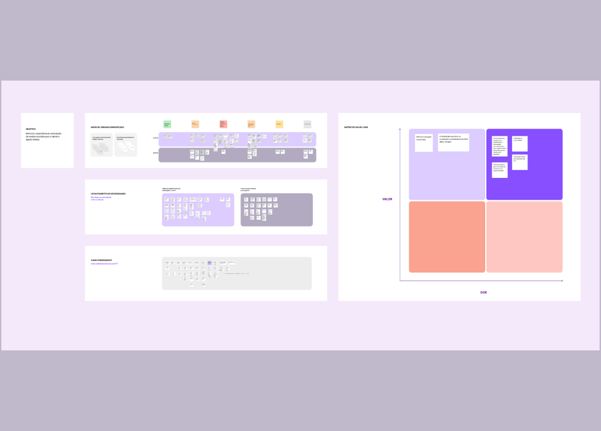
Como estruturei as entregas
O projeto era cross-BU, com recursos de engenharia limitados e prazo apertado. Em vez de esperar uma entrega estrutural, propus fatiar o trabalho em 3 frentes que funcionavam de forma independente. O time de produto aceitou a sugestão e então começamos.
Frente 1 — Comunicações
Auditei todo o conteúdo e os pontos de contato com CX, ajustei o processo interno de atendimento e redesenhei as comunicações transacionais. Analisei as FAQs, os e-mails ativos, a carta de contestação e o blog do Nubank, mapeando os vazios de informação em cada ponto.
O resultado foi uma nova régua de comunicação: a definição de quando falar, em que ponto do processo, com qual objetivo, cobrindo a jornada inteira.
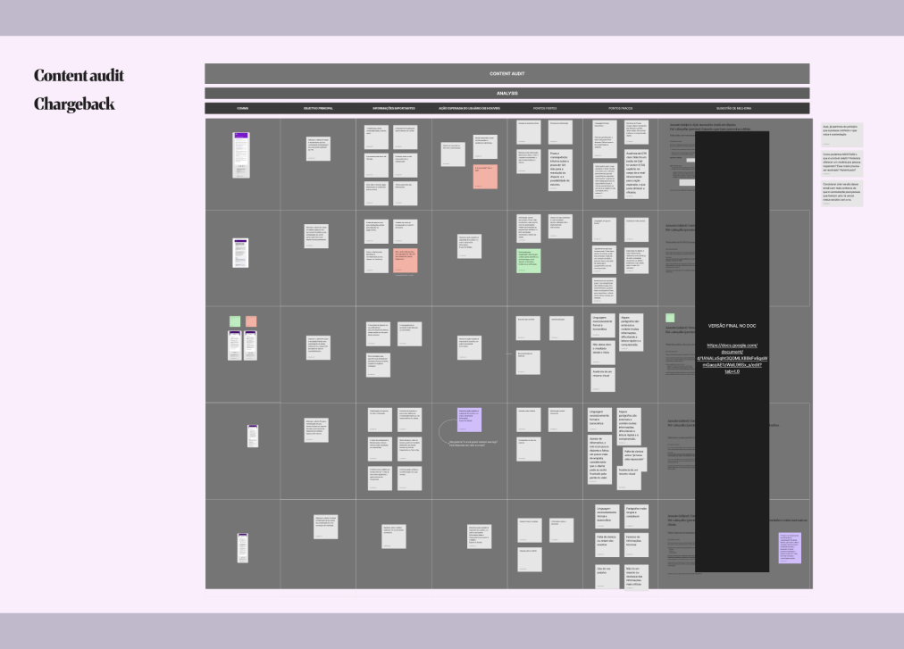
PARTE DO CONTENT AUDIT. Diagnostiquei o que funciona e o que precisava melhorar. Implementamos as melhorias nas comms atuais.
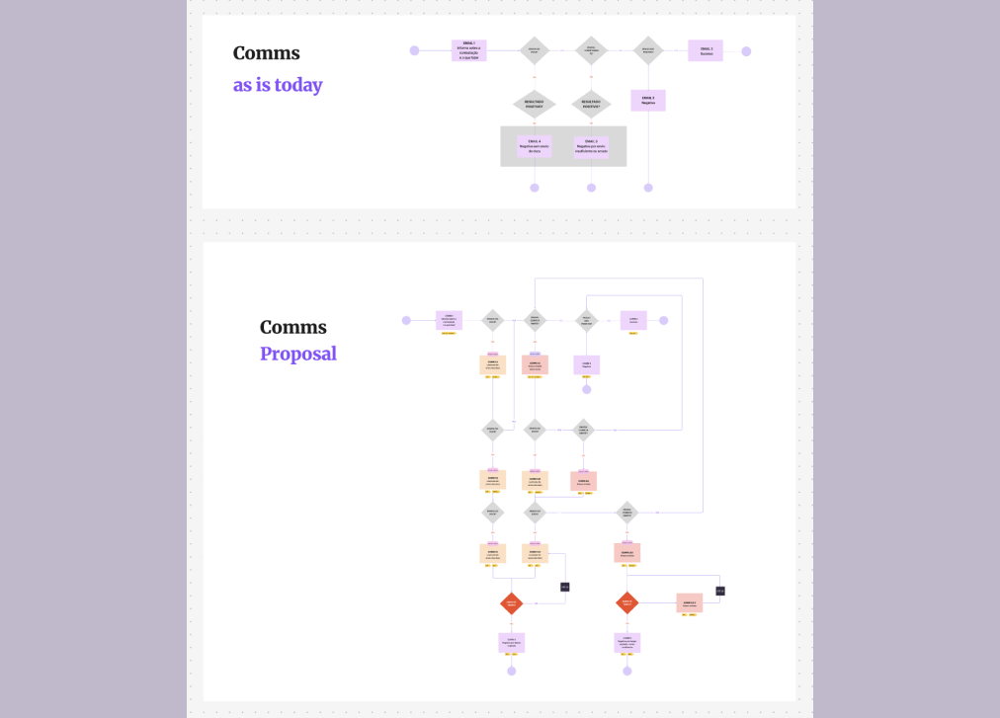
RÉGUA DE COMUNICAÇÃO. Nova proposta tinha buscava automatizar os envios e adicionar lembretes a partir da interação com o cliente.
Frente 2 — A experiência do agente interno MVP
Primeira entrega: visibilidade. O maior motivo de contato não era a contestação em si, era o dinheiro que sumia sem explicação. Desenhei a primeira notificação que sinalizava, no perfil do cliente, que algo estava acontecendo. Usei os componentes que já existiam no sistema interno, para ir ao ar sem depender de desenvolvimento novo.
A decisão de design que mais importou
Separar dois perfis de agente com necessidades diferentes de informação. Desenhar dois níveis de profundidade dentro da mesma ferramenta era a diferença entre uma tela consultável e uma tela que ninguém usa.
O generalista
Precisa de volume e histórico para responder rápido no primeiro contato.
O especialista em contestação
Precisa de detalhe, documentação e pós-defesa.
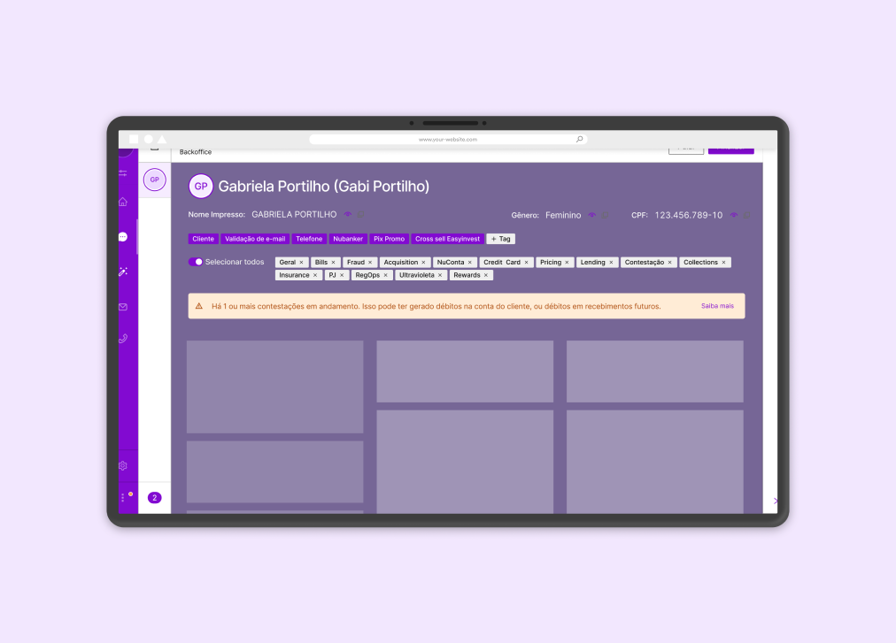
NOTIFICAÇÃO NO PERFIL DO CLIENTE. Primeira vez que info de chargeback entrou na plataforma interna. Engenharia levou 4 dias para implementar, testar e colocar em produção.
Frente 3 — A experiência do agente interno E2E
Segunda entrega: consolidação. Mapeei com CX e com a parceira todas as informações necessárias para tratar uma contestação. Conduzi duas sessões de workshop e uma critique com agentes da BPO e do Nubank para validar se o mapeamento estava completo e, principalmente, se a nomenclatura escolhida fazia sentido para quem ia usar a ferramenta todos os dias. Depois, desenhei a visualização que reunia tudo numa tela só.
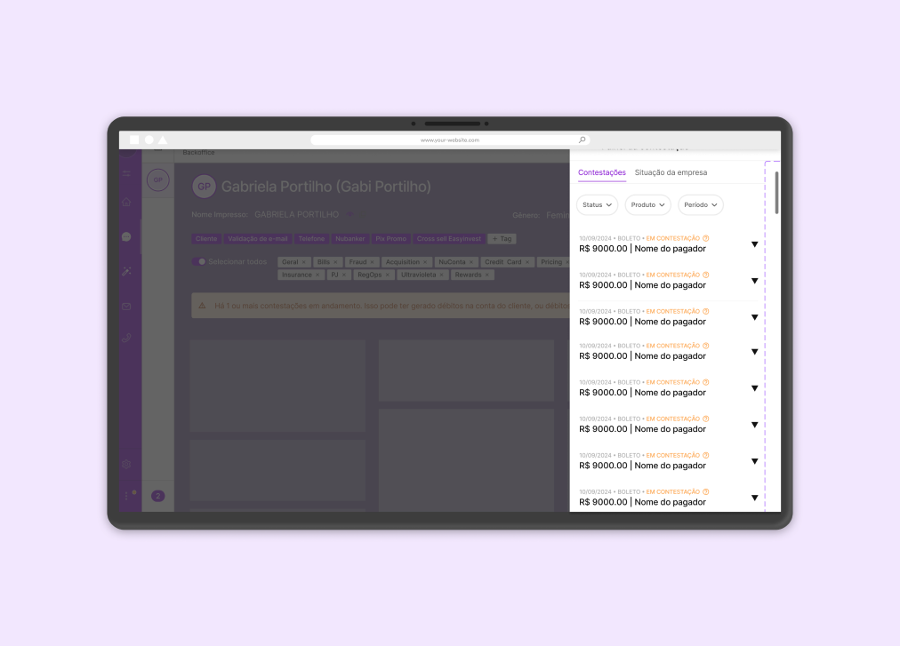
PRIMEIRA VERSÃO DO PAINEL DE CONTESTAÇÃO. Acesso via CTA na notificação no perfil do cliente, que é fixa.
Em termos de arquitetura e coerência, entendi que a informação de chargeback precisaria viver junto das informações de cobrança de um modo geral. No entanto, iterar no widget de cobrança, que era legado, ia levar cerca de 2 meses. Para a visão acima, combinamos 2 semanas com engenharia.
O painel em si, seria reaproveitado porque é o comportamento padrão a partir do widget no sistema interno.
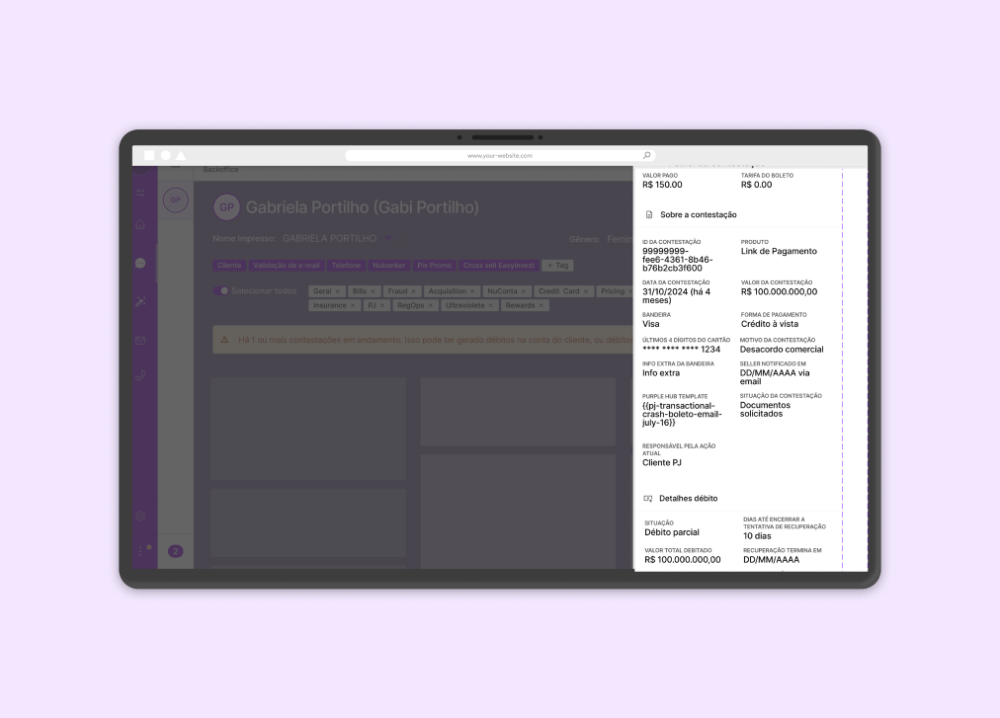
PAINEL EXPANDIDO. Exibe todos os dados necessários para análise de uma contestação para os times de chargeback, mas também fraude.
A aposta que defendi
Para a experiência do usuário final, o cliente PJ, construí uma proposta de visão que dividi com meus pares e a liderança de Design. O objetivo era solucionar de forma categórica o NPS negativo, atrelando essa solução aos valores do Nubank.
Como poderíamos arcar com a primeira venda contestada para transformar a contestação em um momento de confiança?
Levei a proposta com dois argumentos. O de experiência: esse é um dos momentos mais difíceis na vida de um pequeno negócio, e boa parte das microempresas (perfil dominante na base do Nubank PJ naquele momento) nem sabe o que é um chargeback.
O de negócio: o Nubank já absorvia boa parte desses valores de qualquer forma, sem processo um estruturado de recuperação. A proposta era transformar um custo que já existia, invisível, em um gesto intencional de parceria.
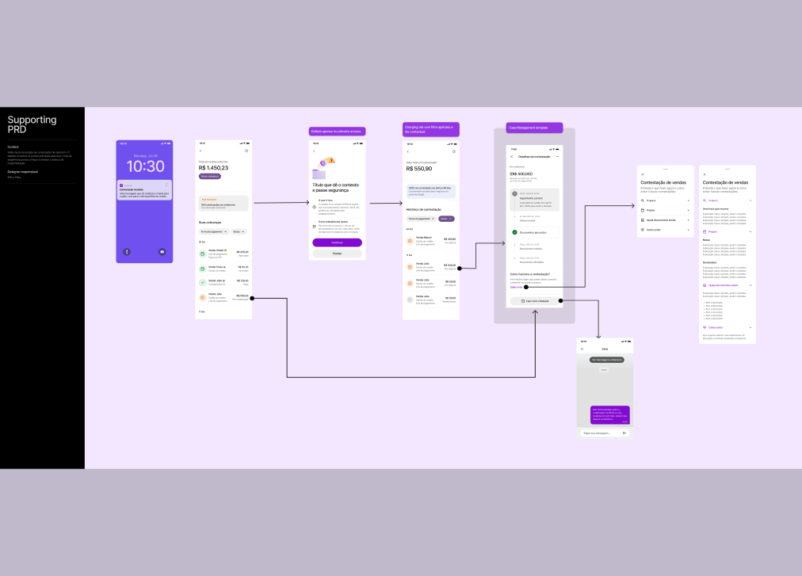
VISÃO GERAL DA PROPOSTA que levei para o PRD. Engenharia começou a avaliação técnica a partir disso.
Porquês desta jornada — Aspectos de produto e design
1
Arquitetura e modelo mental
Posicionei contestação no mesmo nível das transações. Para o cliente, o débito de uma contestação é uma movimentação, então é ali que ele procura entender o que aconteceu. Isso preservou o modelo mental existente e deu visibilidade completa: transação, valor, status, casos simultâneos e histórico.
2
Design como mapa para engenharia
O domínio depende de integrações com parceiros, bandeiras e dados do cliente. Construí a visão sobre componentes e templates existentes para acelerar a entrega e deixar explícito quais dados e integrações eram críticos em cada etapa, tanto no app quanto no desktop. O material virou base de para o spike de engenharia.
3
Envio de documentação via ecossistema
Tirei o envio de documentos do e-mail e trouxe para dentro do ecossistema, com rastreabilidade. A única referência interna era a experiência de Seguros, que eu ajudei a projetar, e parti dos aprendizados dela iterei na visão para PJ.
4
Comunicação como parte do produto
Contestação é um processo longo e assíncrono, e a dor central era a falta de informação. Desenhei a orquestração entre in-app/Desktop, push, WhatsApp e e-mail para que cada mudança de estado chegue ao cliente de forma proativa.
Resultado
26,07%
de taxa de resposta, contra 13,55% antes dessa iniciativa.
+92%
na quantidade de documentação recebida.
Com uma mudança de prioridade da empresa, eu e o time de produto fomos realocados para o projeto da maquininha (POS), recém-aprovado pela liderança executiva, e a iniciativa de contestação passou para outro time. As duas primeiras fatias já estavam no ar antes da transição.
Projeto desenvolvido no Nubank PJ. Telas e artefatos exibidos com fins de portfólio, mantendo confidencialidade sobre informações estratégicas e comerciais.
Veja tambémSee also
Content Metrics
Liderança de iniciativaInitiative leadershipUX MetricsHeart FrameworkCross-empresaCompany-wide
Conteúdo sem métrica é conteúdo sem voz dentro do negócio. Liderei a criação de um processo sistemático de mensuração do impacto de Content Design na BU de Seguros do Nubank — conectando dados qualitativos de experiência com métricas de produto. O piloto virou referência e integrou o UX Metrics Playbook oficial do Nubank.
Content without metrics has no voice in the business. I led the creation of a systematic process to measure Content Design impact within Nubank's Insurance BU — connecting qualitative experience data with product metrics. The pilot became a reference and contributed to Nubank's official UX Metrics Playbook.
EmpresaCompanyNubank Seguros · CoE
PeríodoPeriod2023
PapelRoleSenior Content Design
EscopoScopeFramework de métricas, piloto com Life Insurance e co-criação do UX Metrics PlaybookMetrics framework, Life Insurance pilot and co-creation of the UX Metrics Playbook
ColaboradoresCollaboratorsTime de UXR, lideranças de produto e design, 8 especialistas do CoE cross-empresaUXR team, product and design leadership, 8 cross-company CoE specialists
Contexto
Context
Conteúdo sem métrica e acionável claro é conteúdo sem voz dentro do negócio. Liderei uma iniciativa para criar um processo sistemático de mensuração de impacto de Content Design dentro da BU de Seguros do Nubank — conectando dados qualitativos de experiência com métricas de produto.
Content without clear, actionable metrics has no voice in the business. I led an initiative to create a systematic process for measuring Content Design impact within Nubank's Insurance BU — connecting qualitative experience data with product metrics.
Problema
Problem
As decisões de conteúdo eram tomadas sem base em dados de experiência do usuário. Não havia processo para medir se o conteúdo estava gerando confiança, engajamento ou entendimento do produto — pilares dos nossos produtos. Isso minava o impacto de CD nas discussões estratégicas do negócio.
Content decisions were made without user experience data. There was no process to measure whether content was building trust, driving engagement, or enabling product understanding — all core pillars of our products. This undermined CD's impact in strategic business discussions.
O que fiz
What I did
Adaptei o Heart Framework para criar objetivos de mensuração conectados às metas da BU
Desenvolvi e refinei o SAS (Satisfaction Score) específico para seguros, passando de 8 para 6 atributos após validação com UXR
Rodei o piloto com ~55k clientes de Life Insurance (2.647 respostas, ~4% de taxa de resposta)
Apresentei resultados e next steps para lideranças de produto e design
Fui convidada para co-criar o UX Metrics Playbook oficial do Nubank como parte do CoE cross-empresa, ao lado de 8 especialistas de diferentes BUs
Adapted the Heart Framework to create measurement objectives connected to BU goals
Developed and refined the SAS (Satisfaction Score) specific to insurance, reducing from 8 to 6 attributes after UXR validation
Ran the pilot with ~55k Life Insurance customers (2,647 responses, ~4% response rate)
Presented results and next steps to product and design leadership
Was invited to co-create Nubank's official UX Metrics Playbook as part of a cross-company CoE, alongside 8 specialists from different BUs
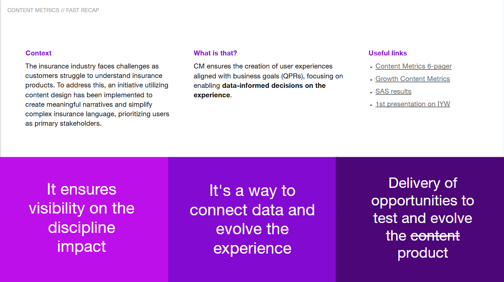
Fast recap da iniciativa — o que é Content Metrics, por que importa e como conecta dados de experiência a decisões estratégicas.Initiative fast recap — what Content Metrics is, why it matters, and how it connects experience data to strategic decisions.
Documento de validação do SAS — especificação dos 6 atributos de satisfação e metodologia de mensuração para Life Insurance.SAS validation document — specification of the 6 satisfaction attributes and measurement methodology for Life Insurance.Task Force UX Metrics (Q2/2023) — relatório de impacto trimestral do CoE cross-empresa do qual fiz parte como co-autora do playbook.UX Metrics Task Force (Q2/2023) — quarterly impact report from the cross-company CoE, where I co-authored the playbook.
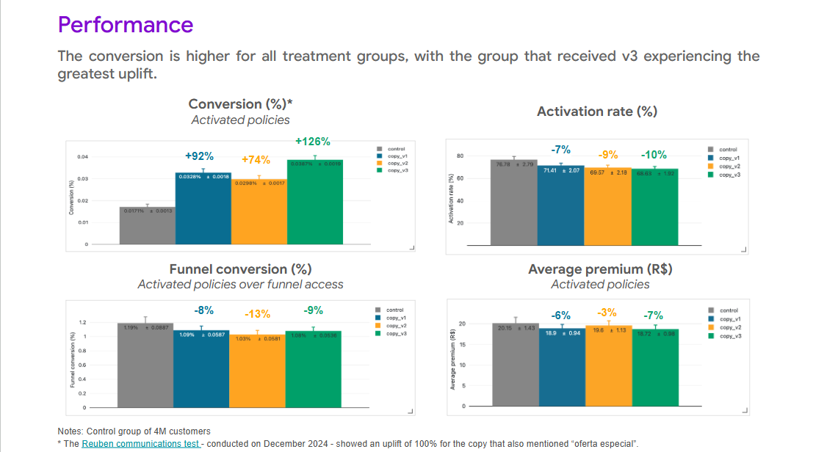
Resultados do teste — uplift de conversão de +92% a +126% nas variantes priorizadas pelo framework de Content Metrics.Test results — conversion uplift from +92% to +126% on the variants prioritized by the Content Metrics framework.
Análise da experiência de contratação de seguro — pontos de atrito identificados no copy que embasaram as priorizações do framework.Insurance purchase experience analysis — copy friction points identified that informed the framework's prioritizations.Próximos passos — roadmap de evolução do projeto com milestones planejados e sugeridos para escala e documentação.Next steps — project evolution roadmap with planned and suggested milestones for scaling and documentation.
Growth Content Metrics Q3/2023 — apresentação da evolução da iniciativa e resultados acumulados ao longo do trimestre.Growth Content Metrics Q3/2023 — presentation of initiative evolution and cumulative results across the quarter.
+16%
conversão na variante testada a partir das prioridades do Content Metrics; piloto integrou playbook adotado como padrão institucional de métricas de UX no Nubank
conversion on the Content Metrics-prioritized tested variant; pilot contributed to the playbook adopted as Nubank's institutional standard for UX metrics
Veja tambémSee also
PJ Payments — desenhar o que acontece quando dá errado
PJ Payments — designing what happens when it fails
FluxoFlowSistemas transacionaisTransactional systemsEstados de erroError statesExperimentaçãoExperimentationPagamento presencialIn-person paymentsCross-squadUX copy
10 minutos de leitura10 min read
Onde a transação se perde ou se recupera.
Where the transaction is lost or recovered.
Em PJ Payments trabalhei quase sempre na mesma região do produto: o erro de leitura do cartão, o pagamento que atrasa, a tarefa repetida pela vigésima vez. São os momentos que o mercado trata como exceção técnica e que, quando medidos, são exatamente onde a transação se perde ou se recupera.
No fluxo de erro do Tap to Pay, a taxa de sucesso saiu de 11% para 17% em duas iterações. Nas cobranças por boleto, as FAQs em fluxo chegaram a 90% de deflexão de atendimento.
In PJ Payments I worked almost always in the same region of the product: the card read that fails, the payment that runs late, the task repeated for the twentieth time — the moments the market treats as technical exceptions and that, once measured, are exactly where a transaction is lost or recovered.
EmpresaCompanyNubank · PJ Payments
PeríodoPeriod2025
PapelRoleSenior Content Designer
EscopoScopeNarrativa de fluxo, UX copy, estados de erro, régua de comunicação, glossário e guidelines, atuação cross-squadFlow narrative, UX copy, error states, communication ruler, glossary and guidelines, cross-squad work
ColaboradoresCollaboratorsProduct designers, product managers, BAs e times de CX das squads de In-person, Digital Sales e Cross-PaymentProduct designers, product managers, BAs and CX teams from the In-person, Digital Sales and Cross-Payment squads
This case is being rewritten. The full text is available in Portuguese while the English version is in progress — switch to PT above to read it.
Contexto
O Nubank PJ oferece várias formas de receber: Tap to Pay, boleto, Pix Cobrança, link de pagamento. Atuei de forma transversal, atendendo três squads ao mesmo tempo — In-person, Digital Sales e Cross-Payment.
Trabalhar assim tem uma vantagem que demorei a perceber: você vê o mesmo problema repetido em produtos diferentes. E o problema que mais se repetia era o momento da falha. Todo produto de pagamento tem um caminho feliz bem cuidado e um caminho de erro que ninguém quis desenhar.
Foi ali que passei a maior parte do tempo.
Tap to Pay
O Tap to Pay transforma o celular do vendedor em maquininha: basta encostar o cartão na traseira do aparelho para cobrar. Produto com NPS 80 e proposta de valor forte — as melhores condições sem precisar comprar ou alugar máquina.
Mas performance, nesse tipo de produto, é o mínimo. Se a cobrança falha na frente do comprador, não existe copy que console.
As métricas do time
O discovery de otimização de fluxo declarou as metas antes de começar, e são elas que orientam as três frentes abaixo:
Métrica-alvo
Redução do tempo até concluir — tempo para configurar a cobrança e tempo para ler o cartão.
Métricas de performance
Menos contatos de “como funciona”, menos erro, mais transações.
Plano de pesquisa
Três fases — survey quantitativo, entrevistas em profundidade e um laboratório de casos de uso.
O plano declarava também os não-objetivos: definir ou testar soluções novas não fazia parte daquela etapa.
Frente 1 — Encontrar o ponto de toque
A posição da antena NFC muda conforme o modelo e a marca do aparelho, e o Nubank não ensinava isso em lugar nenhum. Sem orientação, a pessoa encostava o cartão em pontos aleatórios do próprio celular até funcionar — ou desistia no meio, na frente do cliente.
Estruturei a narrativa do onboarding em início, meio e fim, e co-desenhei o fluxo guiado de detecção, com os dois caminhos:
Caminho feliz
A pessoa é guiada passo a passo até encontrar e confirmar a posição ideal no próprio aparelho.
Caminho infeliz
Se a detecção falha nas três posições possíveis, o fluxo não termina em erro. Ele oferece o que fazer — tirar a capa, encostar na traseira, testar na vertical, manter o cartão por pelo menos cinco segundos — e recomeça.
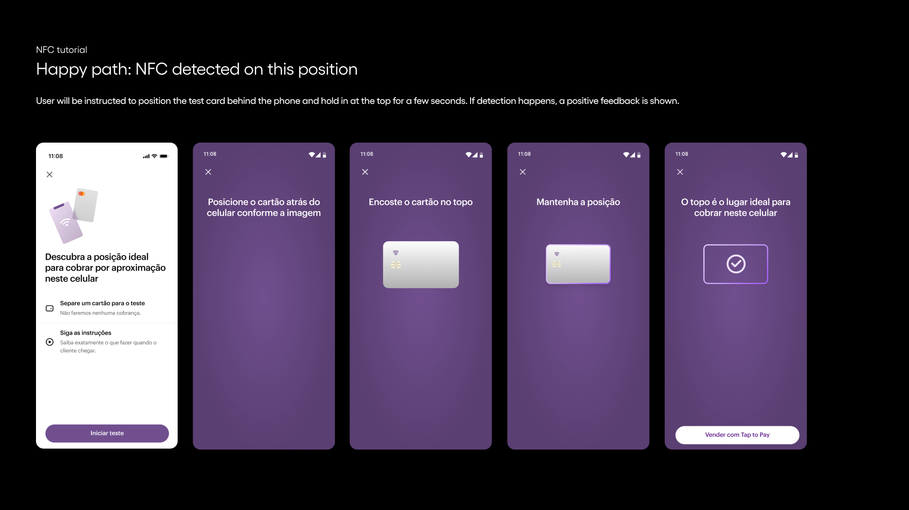
Caminho feliz: a pessoa é guiada até confirmar a posição ideal no próprio aparelho.
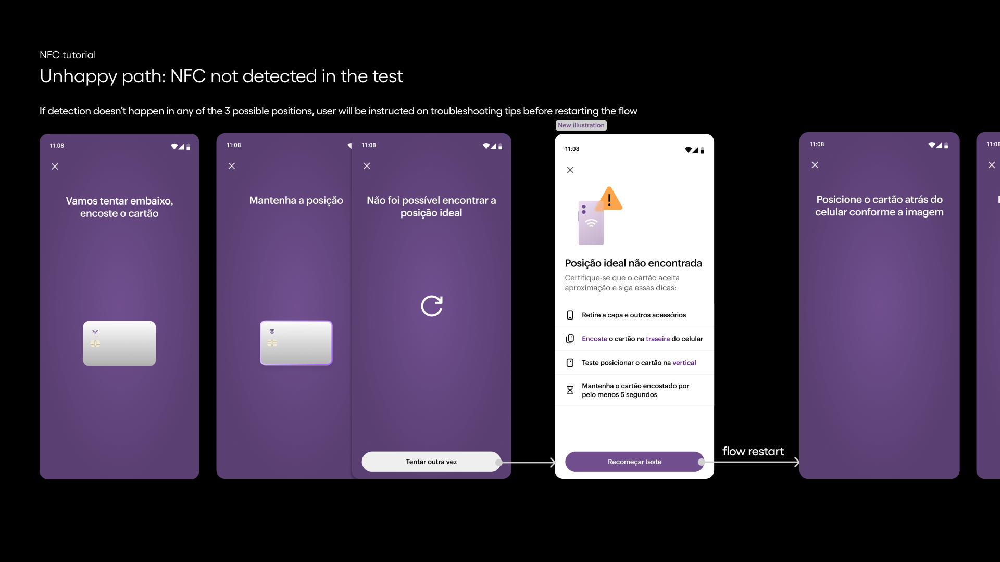
Caminho infeliz: “posição ideal não encontrada” termina em dicas acionáveis e recomeço, não em erro.
A regra
As decisões de linguagem e visual seguiram uma regra: falar do resultado, não do mecanismo. “Mantenha a posição” e “o topo é o lugar ideal”, em vez de “antena NFC”. A ilustração usa o ponto de vista do aparelho e do cartão para ancorar cada passo, e o motion sinaliza a mudança de status — porque a pessoa está olhando para o celular, não lendo.
Frente 2 — Reduzir a carga da tela de entrada
A primeira tela do produto carregava informação demais logo no primeiro contato, competindo com a orientação de uso que o cliente mais precisava naquele momento.
O trabalho foi de subtração, em três versões: da tela como estava, para uma primeira proposta, para a proposta final — título e descrição revistos, lista de taxas visualmente mais leve e aderente ao design system.
Exploramos também uma visão de futuro para a tela, mais ambiciosa. Ela ficou marcada explicitamente como fora daquela entrega. Registrar o que não vai agora, e por quê, é o que impede a exploração de virar promessa.
Frente 3 — O fluxo de erro
Quem liderou esta frente foi a product designer. Dei suporte à pesquisa e contribuí no desenho. E havia uma segunda camada no meu papel: ela estava em nível pleno e eu, sênior — então acompanhá-la e apoiar o desenvolvimento dela ao longo do projeto fazia parte do trabalho, tanto quanto o resultado.
Registro isso porque é uma parte da senioridade que raramente aparece em portfólio. Nem todo projeto de um designer sênior é um projeto que ele lidera. Em time saudável, parte do que se faz é criar as condições para outra pessoa liderar bem — e depois não reivindicar o crédito por isso.
She helped deepen my understanding of content design, fostered cross-product conversations around consistency, and contributed to meaningful improvements across the user journeys we worked on.
Giulia Chagas, Product Designer · recomendação no LinkedIn, junho de 2026
A frente seguiu quatro passos:
1
Analisar a situação
Uma matriz de todos os erros por tipo, cruzada com o que o cliente conseguia fazer em cada um.
2
Criar hipóteses e princípios
A comunicação de erro precisava ser clara, simples e coerente.
3
Explorar e definir a proposta
Só então, a reescrita das mensagens.
4
Medir
Duas iterações, contra a experiência original.
A mudança central foi parar de descrever o problema e passar a oferecer a saída. Uma mensagem que diz “o cartão usado não permite esse tipo de pagamento” está tecnicamente correta e deixa a pessoa parada na frente do comprador. A versão nova nomeia a alternativa que existe naquele momento.
Onde deixa de ser sobre texto
E é aí que essa mudança deixa de ser sobre texto. Para dizer qual é a saída, o sistema precisa saber qual saída existe — para aquele vendedor, aquele cartão, aquela transação, naquele instante. Cada mensagem virou uma condição a ser validada contra um cenário real.
Isso só foi viável porque engenharia e operações estiveram próximas o tempo todo, com troca constante para validar cada cenário. Sem essa proximidade, o resultado teria sido o de sempre: mensagens mais gentis dizendo a mesma coisa inútil.
O resultado, em duas iterações:
11%
de taxa de sucesso na experiência original
14%
na primeira iteração — +27% sobre a original
17%
na segunda iteração — +55% sobre a original
Por componente: o botão primário saiu de 12% para 17%, o secundário de 22% para 27%.
Uma nota sobre atribuição
No mesmo período, o Tap to Pay bateu NPS recorde de 83 e ultrapassou R$ 1 bilhão de TPV mensal. Esses números são do produto inteiro e do pacote de evoluções de UX daquele semestre — atalhos para Android e iOS, melhorias na captura de cartão, atualização de comunicações e FAQ. Contribuí para esse pacote, mas o número que é do fluxo de erro é o 11% para 17%.
Boleto
O discovery
A pesquisa com o ICP mapeou a jornada inteira de cobrança por boleto, e o desenho que saiu dela diz quase tudo: metade do trabalho acontece fora do nosso app.
1
Fechar o negócio
Salvar os dados do comprador em planilha, bloco de notas ou no sistema de nota fiscal · fora do app
2
Cobrar
Configurar o boleto, criar a cobrança, baixar o PDF, emitir a nota · metade fora
3
Enviar
Juntar boleto e nota e mandar por e-mail ou WhatsApp · fora do app
4
Gerir
Acompanhar no app, controlar em planilha, cobrar quem atrasou · quase todo fora
As dores que sustentaram as três frentes seguintes:
O app não guardava os dados do comprador. Mesmo com lista de clientes, o vendedor teria que cadastrar cada cliente duas vezes — no banco e na plataforma do governo.
A troca constante de aplicativo para copiar e colar dados, com erro de digitação e autocorreção no caminho. “Toda vez você tá repetindo os dados que poderiam ser salvos. E se sai alguma coisa errada no CNPJ, não aparece no buscador de boleto dele.”
O app não tinha juros nem multa — e o vendedor precisava disso para lidar com atraso.
A cobrança gerava link ou código de barras, não PDF. “Quando concluo, não gera o boleto em PDF. Tenho que enviar o link para o meu WhatsApp, clicar lá e baixar.”
O dado
Um dado do quantitativo explica por que boleto ainda importa tanto em B2B: quem decide a forma de pagamento não é quem vende, é quem compra.
Frente 1 — Juros e multa
Trabalhei a régua de comunicação, os templates e as FAQs integradas ao fluxo — a informação no ponto da dúvida, e não numa central de ajuda a três cliques de distância.
~90%
de deflexão de atendimento nas cobranças de boleto, em novembro
0,01%
de tickets: indicadores de atendimento estáveis
3,0 dias
de mediana de pagamento, contra 4,8 — um sinal inicial
E aqui vale ser exato sobre o que o teste mostrou e o que não mostrou. Comparando tratamento e controle: conclusão de pagamento +2,79%, taxa de atividade −0,94%, TPV +2,27% — nenhum dos três estatisticamente significativo. Houve um sinal inicial de pagamento mais rápido, com mediana de 3,0 dias contra 4,8.
A leitura de negócio que levamos foi essa: paridade com o mercado, potencial de receita por tarifa, e redução do tempo médio de recebimento sem aumentar fricção. A deflexão de atendimento é o resultado sólido; o resto era sinal, e apresentei como sinal.
Frente 2 — Novos limites de pagamento
Explorei e propus a régua de comunicação, e defini o conteúdo e os templates.
R$ 2.136
de TPV por cliente ativo, antes das comunicações
R$ 2.207
depois do anúncio no app
R$ 2.251
depois do e-mail — recorde histórico no período
O TPV total foi de R$ 54,0 milhões para R$ 57,6 milhões. O anúncio teve 85% de taxa de exibição e 12,43% de cliques.
O que não aconteceu
O número de clientes ativos não avançou de forma relevante. As comunicações elevaram o quanto quem já usava passou a transacionar, e não quantas pessoas passaram a usar. São coisas diferentes, e a segunda não era efeito que comunicação sozinha fosse produzir.
Frente 3 — Lista de clientes
Ataca diretamente a dor mapeada no discovery: uma tela no início do fluxo para selecionar clientes recorrentes, com carga automática dos que já existiam. Menos digitação repetida, menos erro de CNPJ, menos cobrança que não aparece na busca do comprador.
O tema “lista de clientes” havia se tornado a principal dor no NPS de boletos, que estava em 69.
O trabalho que dá escala
Além dos projetos, mantive a base que faz o conteúdo funcionar sem depender de mim:
1
Glossário de PJ Payments
Mapeamento de conceitos e documentação, para que squads diferentes chamassem a mesma coisa pelo mesmo nome.
2
Alinhamento de terminologia entre Payments e Enterprise
Liderei um mapeamento de inconsistências reunindo designers e content designers dos dois domínios, para definirmos prioridades juntos e acordarmos como registrar decisões de conteúdo.
3
Princípios de cenário de erro
A definição do que a comunicação de falha precisa fazer, e de como tangibilizar isso em tela. É a fundação conceitual da terceira frente do Tap to Pay.
4
Content Guide com IA
Liderei um pack dentro da workstream de excelência em design para criar um guia de conteúdo assistido por IA: estruturei a POC, defini os parâmetros de avaliação, gravei demonstrações e conduzi o período de testes. Chegou a 84% de adesão entre os designers nos primeiros 30 dias.
O que eu faria diferente
Definir a métrica de cada frente junto com a frente. A separação entre o que era resultado do fluxo de erro e o que era resultado do pacote de UX só ficou nítida depois. Enquanto não estava, o número grande do produto tendia a absorver o crédito do trabalho específico — o que atrapalha a leitura de impacto de todo mundo, não só a minha.
Aprofundar arquitetura de informação em contexto multiplataforma. Recebi esse feedback formalmente, no projeto de lista de clientes, e ele estava certo: eu tratava app e web com o mesmo desenho de informação, quando os dois contextos de uso pedem recortes diferentes. Foi um dos pontos que passei a trabalhar depois, e o guia de conteúdo com IA nasceu em parte desse esforço de fechar lacunas apontadas.
Acordar prioridade com cada squad, explicitamente. Atender três squads ao mesmo tempo, num semestre em que o projeto de POS também entrava, custou consistência. Aprendi que em atuação transversal o acordo de prioridade não é overhead administrativo — é parte do trabalho de design, e precisa ser feito antes de o conflito aparecer.
Projeto desenvolvido no Nubank PJ. Telas e artefatos exibidos com fins de portfólio, mantendo confidencialidade sobre informações estratégicas e comerciais.
Veja tambémSee also
Content Guide com IA
AI-Powered Content Guide
IA generativaGenerative AIEscalabilidadeScalabilityGovernançaGovernance
Com um time de Content Design distribuído entre múltiplos squads, garantir consistência de narrativa e qualidade de copy em escala era um desafio operacional real. Liderei a criação de um Content Guide com IA — uma Gem treinada nos princípios, glossário e tom de voz do produto — que reduziu o tempo de validação de dias para minutos e alcançou 84% de adesão nos primeiros 30 dias.
With a Content Design team distributed across multiple squads, ensuring narrative consistency and copy quality at scale was a real operational challenge. I led the creation of an AI-powered Content Guide — a Gem trained on the product's principles, glossary, and tone of voice — that cut validation time from days to minutes and reached 84% adoption in the first 30 days.
EmpresaCompanyNubank
PeríodoPeriod2025
PapelRoleSenior Content Design
EscopoScopePOC, treinamento da Gem, evangelização e rollout para o chapterPOC, Gem training, evangelization and chapter rollout
ColaboradoresCollaboratorsChapter de Content Design PJ, workstream de excelência em designPJ Content Design chapter, design excellence workstream
Contexto
Context
Com um time de Content Design distribuído entre múltiplos squads em PJ, garantir consistência de narrativa e qualidade de copy em escala era um desafio operacional real. Liderei o pack de AI dentro da workstream de excelência em design cross-PJ para criar uma solução escalável.
With a Content Design team distributed across multiple squads in PJ, ensuring narrative consistency and copy quality at scale was a real operational challenge. I led the AI pack within the cross-PJ design excellence workstream to create a scalable solution.
Problema
Problem
O tempo gasto para validar narrativa e copy em cada tela era alto e o processo dependia de revisão manual. Sem um mecanismo de escala, a consistência de marca ficava comprometida à medida que o time crescia.
The time spent validating narrative and copy for each screen was high, and the process depended on manual review. Without a scaling mechanism, brand consistency was at risk as the team grew.
O que fiz
What I did
Estruturei o processo e os artefatos da POC do Content Guide powered by IA
Defini os parâmetros de avaliação da Gem: narrativa, voz, glossário, clareza de copy, redução de atrito e alinhamento com diretrizes do Nu
Gravei demonstrações em tempo real para evangelizar o uso no chapter
Conduzi o kickoff e o período de testes com coleta de feedback contínuo
Centralizei as decisões de content design no Content Guide AI, garantindo atualizações acessíveis para toda a empresa
Structured the process and artifacts for the AI-powered Content Guide POC
Defined the Gem's evaluation parameters: narrative, voice, glossary, copy clarity, friction reduction, and Nu guidelines alignment
Recorded real-time demos to evangelize usage across the chapter
Led the kickoff and testing period with continuous feedback collection
Centralized content design decisions in the Content Guide AI, ensuring updates were accessible company-wide
Demonstração da POC — Content Guide powered by AI em uso real, validando narrativa, voz e copy em tempo real.POC demo — AI-powered Content Guide in real use, validating narrative, voice, and copy in real time.
−90%
redução estimada no tempo de validação de copy (de dias para minutos); 84% de adesão dos designers nos primeiros 30 dias
estimated reduction in copy validation time (from days to minutes); 84% designer adoption in the first 30 days
Veja tambémSee also
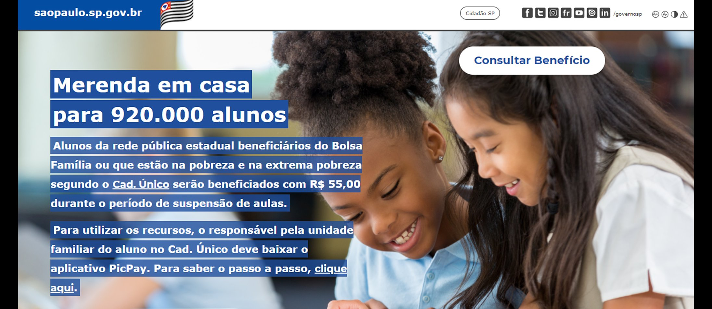
Merenda em Casa
Comunicação de criseCrisis communicationImpacto socialSocial impactAutoatendimentoSelf-serviceWar Room
Em 2020, o governo de SP lançou o Merenda em Casa para substituir a merenda escolar durante a pandemia — e o PicPay foi escolhido como plataforma de pagamento. O desafio: onboar milhares de famílias de baixa renda e diretores de escola em tempo recorde, com suporte explodindo e zero material de apoio adequado. Atuei no War Room criando a estratégia de autoatendimento e os materiais que reduziram o volume de contatos e chegaram a 920 mil alunos beneficiados.
In 2020, the São Paulo state government launched Merenda em Casa to replace school meals during the pandemic — and PicPay was chosen as the payment platform. The challenge: onboard thousands of low-income families and school principals in record time, with support volume exploding and zero adequate guidance material. I worked in the War Room to build the self-service strategy and materials that reduced contact volume and reached 920,000 student beneficiaries.
EmpresaCompanyPicPay
PeríodoPeriod2020
PapelRoleContent Designer
EscopoScopeAutoatendimento e material de apoio para o Merenda em CasaSelf-service flows and support materials for Merenda em Casa
ColaboradoresCollaboratorsTime de produto, design e liderança em War RoomProduct, design and leadership team in War Room
Contexto
Context
No início de 2020, o governo do estado de SP lançou o programa Merenda em Casa para famílias de alunos da rede pública. O PicPay foi escolhido como plataforma de pagamento — e precisava onboar milhares de usuários de baixa renda e diretores de escola em tempo recorde, em meio a uma crise de saúde pública.
In early 2020, the São Paulo state government launched the Merenda em Casa program for public school families. PicPay was chosen as the payment platform — and needed to onboard thousands of low-income users and school principals in record time, amid a public health crisis.
Problema
Problem
O volume de contatos com o suporte explodiu: pessoas com direito ao benefício, mas que não tinham feito o cadastro corretamente, entravam em contato com dúvidas — e escolas estavam sendo acionadas pelas famílias para ajudá-las a criar conta e usar o app. Não havia autoatendimento eficiente nem material de apoio adequado para esses públicos.
Support contact volume exploded: people entitled to the benefit but who hadn't registered correctly were reaching out with questions — and schools were being contacted by families for help creating accounts and using the app. There was no efficient self-service or adequate support materials for these audiences.
O que fiz
What I did
Conduzi desk research com análise de dados do atendimento e categorização nas plataformas internas
Participei da definição da estratégia e dos critérios de sucesso com lideranças em contexto de War Room
Criei e validei o canvas de conteúdo e storytelling para a feature de autoatendimento priorizada
Desenvolvi material de apoio para diretores e diretoras de escola — manual PicPay para Auxílio COVID-19
Participei da construção do contrato entre produto e time técnico, testes em QA e acompanhamento em produção
Conducted desk research with support data analysis and internal platform categorization
Participated in strategy and success criteria definition with leadership in a War Room context
Created and validated the content canvas and storytelling for the prioritized self-service feature
Developed support materials for school principals — PicPay Manual for COVID-19 Aid
Participated in the product-engineering contract, QA testing, and production monitoring
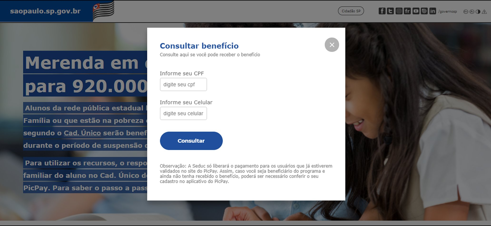
Modal de consulta no site do governo — ponto de entrada que gerava confusão e volume de suporte.Government site lookup modal — the entry point driving confusion and support volume.
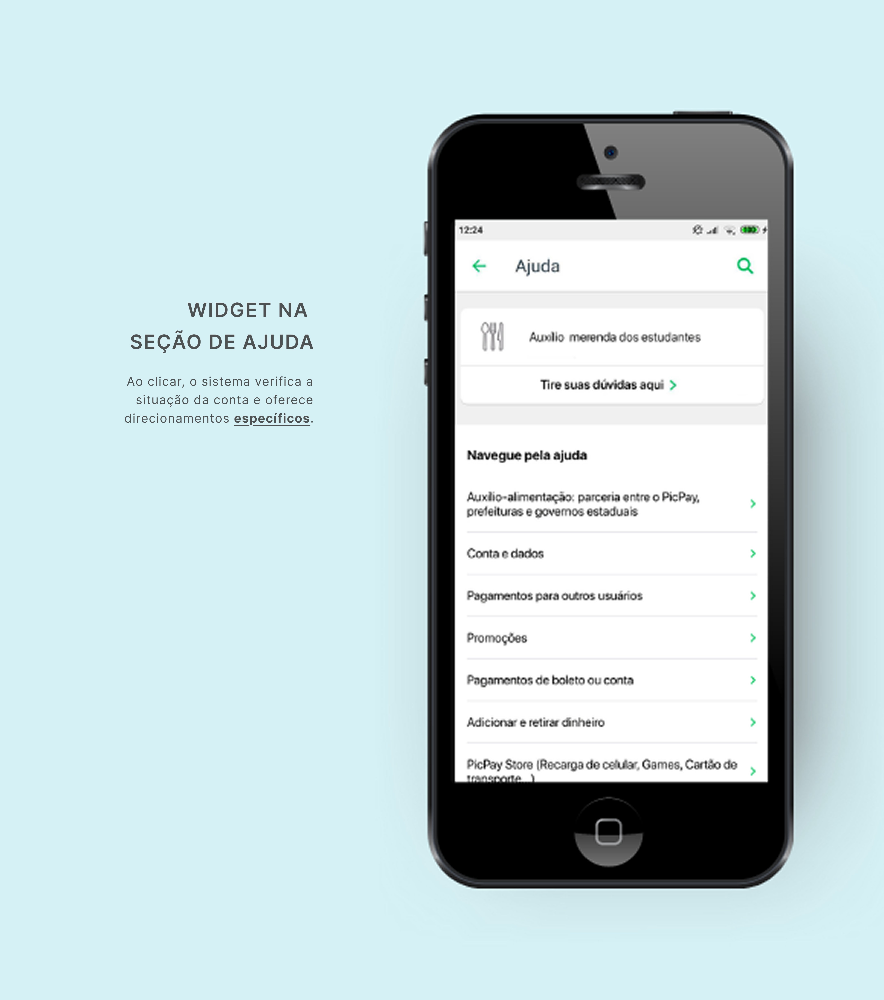
Widget na seção de Ajuda do app: ao tocar, o sistema verificava a situação da conta e oferecia direcionamentos específicos.Help section widget in the app: on tap, the system checked account status and offered specific guidance.
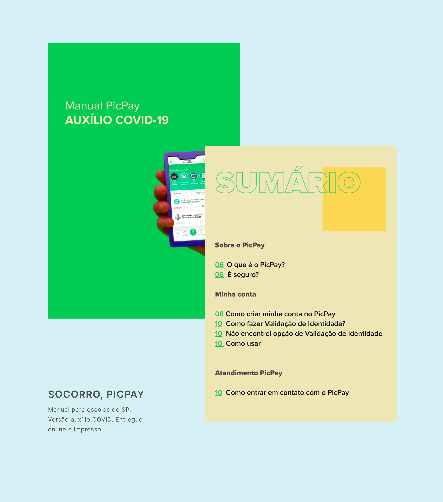
Manual PicPay Auxílio COVID-19 — entregue online e impresso para diretores e diretoras de escola de SP.PicPay COVID-19 Aid Manual — delivered online and in print to school principals across SP.
−86%
redução nos contatos de suporte relacionados ao programa
reduction in program-related support contacts
Veja tambémSee also
POS — o primeiro hardware do Nubank
POS — Nubank's first hardware
HardwareHardwareProduto novoNew productArquitetura de informaçãoInformation architectureIntegração com parceiroPartner integrationDesign systemDesign systemJornada E2EEnd-to-end journeyPré-lançamentoPre-launch
12 minutos de leitura12 min read
Como se decide quando o dado ainda não existe.
How you decide when the data doesn't exist yet.
Para crescer junto às empresas que atende, o Nubank precisava entrar no varejo — e no Brasil, em 2025, varejo sem maquininha não existe. Trabalhei nas jornadas de pedido, rastreio e ativação do primeiro hardware da empresa, com lançamento previsto para 2027.
É o único projeto do meu portfólio sem número de resultado, porque o produto ainda não chegou ao público. E é justamente por isso que ele é o case sobre outra coisa: como se decide quando o dado ainda não existe.
Nubank needed to enter retail to grow alongside the businesses it serves — and in Brazil, in 2025, retail without a card terminal doesn't exist. I worked on the request, tracking and activation journeys of the company's first hardware product, slated to launch in 2027.
EmpresaCompanyNubank · PJ Payments
PeríodoPeriod2025–2026
PapelRoleSenior Content Designer
EscopoScopeAnálise competitiva e POV de narrativa, taxonomia, jornadas de pedido, rastreio e ativação, guidelines de conteúdo do produtoCompetitive analysis and narrative POV, taxonomy, request, tracking and activation journeys, product content guidelines
ColaboradoresCollaboratorsProduct designers, product manager, product ops, engenharia, CX e o time da Fiserv, parceira do produtoProduct designers, product manager, product ops, engineering, CX, and the team at Fiserv, the product partner
This case is being rewritten. The full text is available in Portuguese while the English version is in progress — switch to PT above to read it.
Contexto
Com os aprendizados do Tap to Pay e uma economia de produto agressiva, a área de PJ recebeu sinal verde para estruturar a maquininha — codinome Roxinha, lançamento público previsto para 2027.
A pesquisa quantitativa fechou quem era o cliente ideal, e os números explicam a escolha:
Perfil
Pequeno varejo não alimentício — moda, casa e construção, saúde e beleza, eletrônicos, pets, autopeças.
~1,4 mi
empresas usando maquininha
R$ 31 mil
por mês transacionados por empresa
49%
das vendas passam pela maquininha
3,0%
o que pagam hoje no crédito à vista
6,6%
o que pagam hoje no parcelado
30%
dizem que “definitivamente considerariam” trocar
O varejo alimentício já estava bem servido, inclusive em taxa. Escritórios e prestadores de serviço eram mais fáceis de atender, mas dependiam menos da maquininha. O varejo não alimentício era quem mais transacionava e quem mais pagava.
O problema
Para competir com Itaú, Mercado Pago e Stone, a estratégia foi apostar em duas coisas: um ICP bem definido e condições agressivas para esse público.
E aí está o problema de design, que não é sobre tela:
Com a margem apertada por decisão estratégica, cada erro de operação vira custo. E custo suficiente para colocar em xeque a viabilidade do produto.
Isso deu ao design uma responsabilidade que ele normalmente não tem. Além de entregar o “fator Nubank” — simples, amigável, confiável —, era preciso reduzir erro ao mínimo, especialmente no pedido e no rastreio, onde cada dúvida vira ligação e cada ligação vira custo operacional.
A métrica
O produto não lançou. Mas as metas existiam, e o time tinha uma bem específica.
Atuei de forma transversal, atendendo todas as squads do produto e dando reforço aos product designers quando a carga apertava. A métrica que orientava o trabalho nas jornadas em que atuei era esta:
A métrica do time
A porcentagem de lojistas que completam a jornada inteira de gestão da maquininha — pedido, ativação e acompanhamento de vendas e recebíveis — sem precisar contatar o atendimento.
Pedido, ativação, acompanhamento: são exatamente as jornadas em que trabalhei. Toda decisão descrita abaixo foi tomada contra essa métrica.
Na fase de aquecimento, com cerca de 50 funcionários com CNPJ usando o produto, os indicadores eram ainda mais diretos: baixa taxa de contato, baixo volume de tickets de operação, e tempo de resposta da parceira. Sem meta de significância estatística — declarado desde o início.
A fundação (2025)
Entender a parceira antes de desenhar
O discovery com a Fiserv levou mais de três meses e envolveu visitas às estações logísticas, workshops conduzidos por design e operações, e muitas reuniões. Meu papel foi entender os atores, os conceitos e os nós dos processos existentes, e estressá-los junto ao product designer para desenhar a jornada que queríamos.
Envolveu jogo de cintura: desafiamos alguns conceitos e procedimentos da parceira. Nem tudo o que já funcionava do lado dela fazia sentido do lado do cliente.
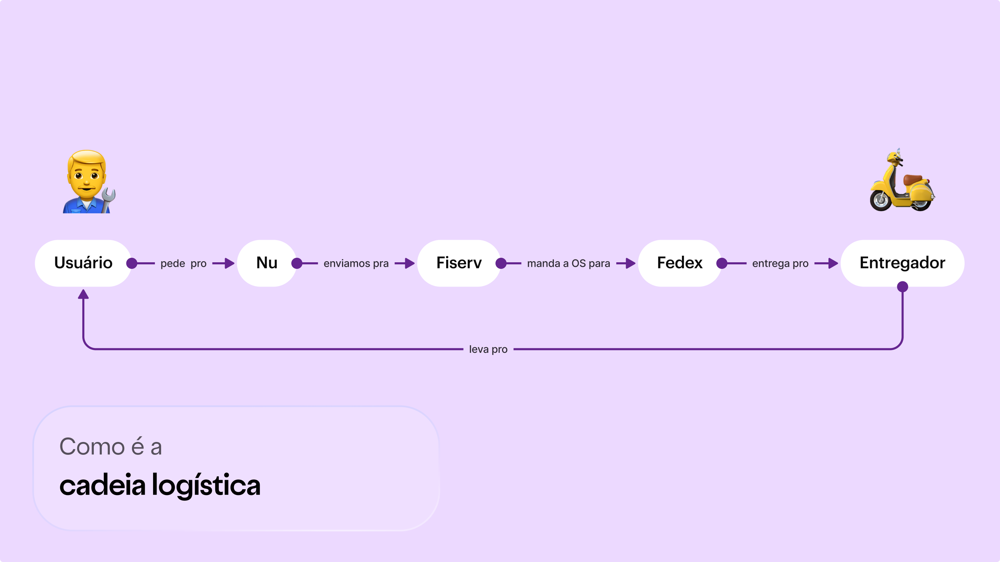
Cadeia logística da parceira: processos, atores e pontos críticos.
O POV de narrativa
Escrevi o documento que definiu o ponto de vista de conteúdo e narrativa do produto. Antes dele, analisamos seis maquininhas do mercado — Bin, Clover, InfinitePay, Mercado Pago, Itaú e Ton — em seis eixos, incluindo estrutura da informação, aviso sonoro e feedback tátil, progressão narrativa e consistência com o ecossistema de cada marca. E em quatro jornadas críticas: primeira venda, estorno, fechamento de caixa e cenários de erro.
O achado
Mensagens vagas e não acionáveis são o antipadrão mais crítico e universal do mercado. “Erro de Processamento”, “Transação não autorizada”, “Operação Cancelada” — exibidas por praticamente todos os concorrentes, sem explicar a causa nem, principalmente, o que fazer a seguir.
O ponto de vista que propus a partir daí: enquanto o mercado foca na transação, nós focaríamos na relação. A maquininha como parceira do negócio, não como terminal.
Isso virou proposta concreta em quatro frentes, cada uma com os artefatos que a sustentariam. As mais determinantes:
1
Uma matriz de mensagens de erro
Cada erro mapeado com a causa em linguagem humana, a ação que o cliente deve tomar, e o próximo passo se aquela ação não resolver.
2
Uma simulação de venda de R$ 100 na ativação
Mostrando as taxas exatas e o valor líquido que cairia na conta. Transparência como primeiro gesto do produto, e não como página de termos.
3
Arquitetura de informação em três camadas
A maquininha responde “o que aconteceu hoje”, o app responde “como foi minha semana”, a web responde “como posso crescer”. A mesma informação com recortes diferentes, conforme o contexto de uso.
4
Perfis de acesso e modo treinamento
Dono e operador, com permissões distintas — e um modo treinamento, para funcionário novo simular vendas sem processar transação real.
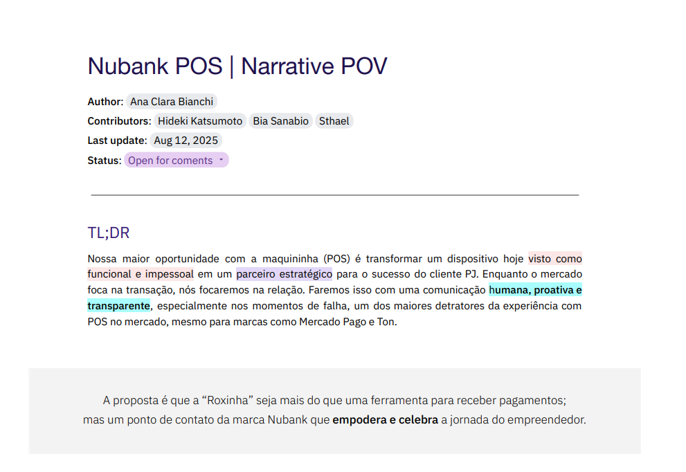
POV de narrativa: o documento que definiu o ponto de vista de conteúdo do produto.
O documento foi validado por marketing e orientou os aspectos iniciais do design system de hardware.
Taxonomia e território semântico
Criei junto com a engenharia a taxonomia do produto, padronizando conceitos e nomenclatura entre squads — em especial com o time de Tap to Pay, que compartilhava vocabulário e clientes. Também consolidei o que sabíamos sobre o ICP em um documento aberto ao time, disponibilizado na ferramenta de IA que usávamos como repositório de conhecimento.
Participei da design sprint com clientes conduzida por operações, mapeando o território semântico: como as pessoas descrevem entrega, rastreamento e ativação quando falam do próprio negócio, e não do nosso produto.
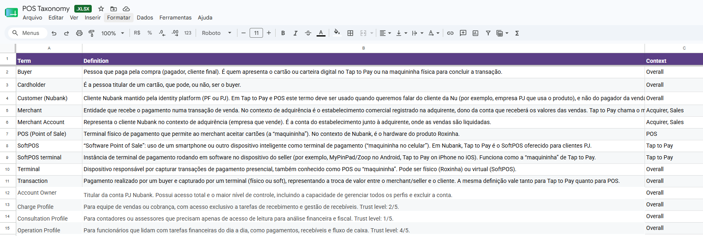
Taxonomia: conceitos e nomenclatura padronizados com a engenharia.
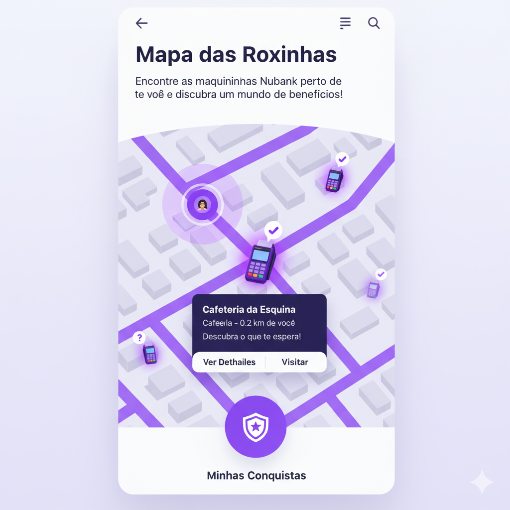
Design sprint com clientes, conduzida por operações.
O que saiu da design sprint
Consolidamos as terminologias e voltamos com o reforço de algo que já suspeitávamos, agora dito pelos próprios clientes — o POS do Nubank só teria valor real, em vez de ser mais uma maquininha, se usasse o ecossistema que já existe. Notificação inteligente, ativação inteligente, conexão entre app, maquininha e web.
Isso mudou onde estava a aposta. A maquininha isolada não ganharia por taxa, porque taxa se copia. Ganharia por estar conectada ao que o cliente já usa todo dia — e foi essa leitura que sustentou a arquitetura em três camadas que propus no POV.
As jornadas (2026)
Vale contar o momento, porque ele explica o formato do trabalho. As squads estavam se formando, o time de design ainda tinha vagas abertas, e todo mundo — nós e a parceira — estava aprendendo a trabalhar junto. Muita incerteza e pouca estrutura estabelecida.
A estratégia foi dividir para conquistar. Como eu já tinha endereçado os nortes de narrativa e as fundações de conteúdo, e como a designer que liderava as frentes de pedido e rastreio precisava de uma segunda pessoa de design ao lado — o que era esperado para o tamanho daquelas jornadas —, assumi esse papel.
Trabalhamos juntas, mão na massa, em sessões de design. O que segue são as decisões dessas jornadas e o que contribuí em cada uma.
Pedido
É onde o lojista decide. E concentra tensões reais: proposta de valor clara contra detalhes legais obrigatórios, velocidade de decisão contra configuração técnica.
Atuei em pontos centrais dessa jornada, propondo componentes novos e outras formas de apresentar a informação — em especial na quantidade de maquininhas e na janela de entrega.
A primeira tela
Em fluxos de aquisição de produto físico no Nubank, o abandono na primeira tela chega a 80%. Partimos disso: a proposta de valor precisa chegar inteira acima da dobra, sem scroll, sem exigir que a pessoa procure informação para decidir.
A quantidade
O seletor chega preenchido com o padrão do perfil — na maioria dos casos, uma máquina. A decisão elimina a escolha ativa no caminho feliz: quem não precisa mudar, não muda; quem precisa, tem controle. O limite máximo vem de regra de negócio aplicada ao perfil, e o componente materializa essa restrição sem expor a regra ao cliente.
A janela de entrega
Botões visuais em vez de lista. O lojista não quer ler opções, quer reconhecer e confirmar em um gesto. A escolha revelou um débito do design system: por padrão, o componente só permite seleção única. Ficou mapeado como ponto a validar com o time responsável.
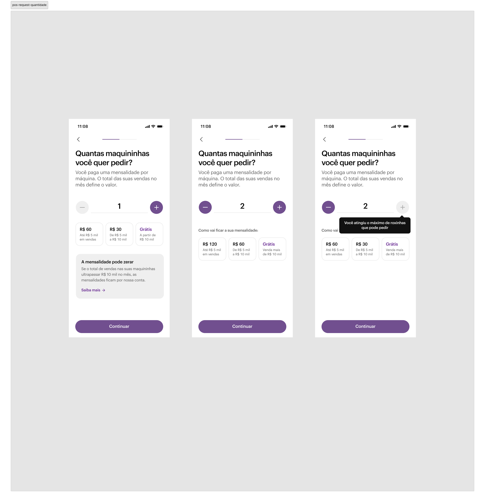
Quantidade: o seletor chega preenchido com o padrão do perfil.
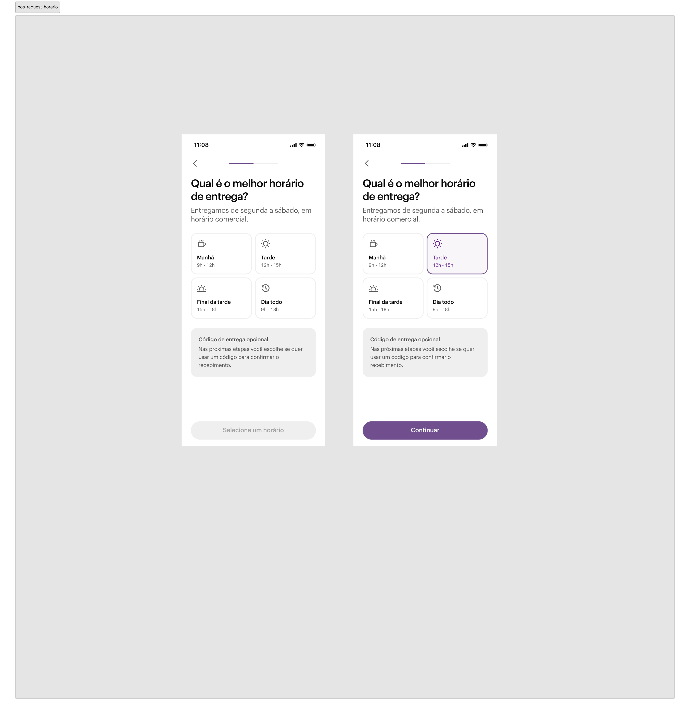
Janela de entrega: botões visuais em vez de lista.
A tela de revisão. Aqui quebramos um padrão de propósito. No Nubank, tela de revisão é só revisão — a única ação é confirmar e seguir. Incluímos uma decisão nela: ativar ou não o código de entrega.
A hipótese era que aquele fosse o momento certo. O conceito já havia sido apresentado nas telas anteriores, no rodapé da escolha de horário, quando a pessoa já estava pensando em entrega. Ao trazer a ativação para a revisão, a jornada ficava coesa e enxuta, sem exigir uma tela a mais. A validação estava prevista para testes de usabilidade.
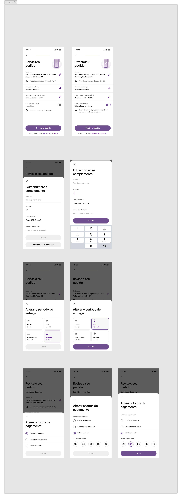
A tela de revisão, com a decisão de ativação embutida.
Rastreio
Foi onde minha contribuição foi mais forte. Mapeamos a cadeia logística da parceira — processos, atores e pontos críticos — e definimos juntas a arquitetura de informação da tela padrão de rastreio: o que mostrar, em que momento da jornada, com qual comportamento de componente.
Propusemos um template de rastreio que não existia no Nubank. A proposta foi apresentada e aprovada em fórum da empresa inteira, com PJ sendo a primeira área a implementar e as demais adotando o mesmo padrão depois.
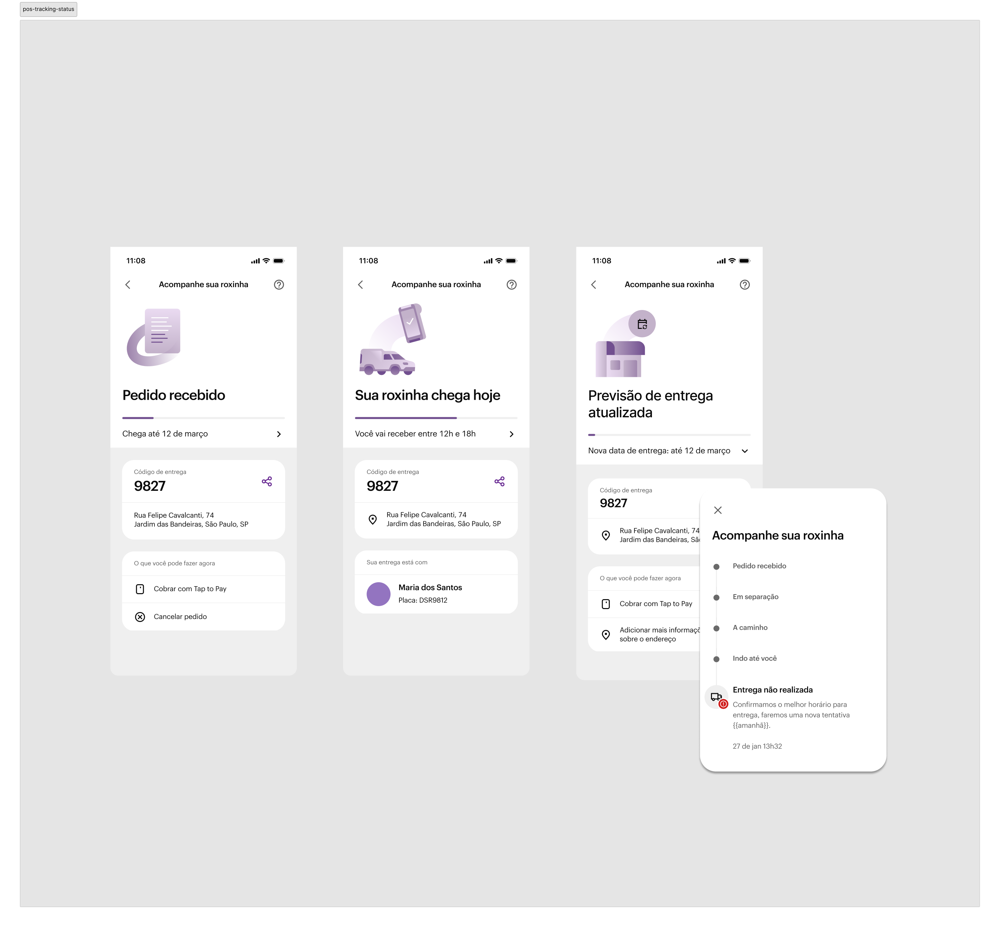
Template de rastreio: informação primária, fixa e variável em cada etapa.
A decisão mais difícil foi sobre os dados do entregador. Foto, nome e placa: o time de design considerava imprescindível, porque a entrega quase sempre chega de moto e o lojista precisa saber quem está batendo na porta.
Só que esses dados não existiam na Fiserv. Precisavam ser solicitados à transportadora via API, no formato e na estrutura que conseguíamos consumir. Isso exigiu negociação com a parceira e o mapeamento de todos os cenários de contingência: o que exibir quando a foto não vem, quando a placa chega incompleta, quando nada chega. Em alguns casos o card aparece com dados parciais; em outros, não aparece.
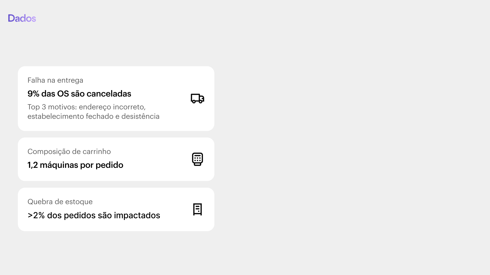
Os fluxos de dados do rastreio e os cenários de contingência.
O aprendizado
Uma necessidade de experiência virou requisito de integração e desenho de estados degradados. Foi a decisão que mais me ensinou nesse projeto.
Lógica de erros
O achado da análise competitiva virou requisito: nenhuma mensagem de erro da Roxinha poderia parar na descrição do problema. A matriz que estruturei organiza cada erro em três camadas:
1
O que aconteceu
Em linguagem que o lojista entende.
2
O que fazer agora
3
O próximo passo
Se a primeira ação não resolver.
Parte das mensagens vinha do código legado da parceira, em linguagem técnica de terminal. Traduzir isso sem perder precisão exigiu mapear, com engenharia, quais códigos de erro correspondiam a quais situações reais no balcão.
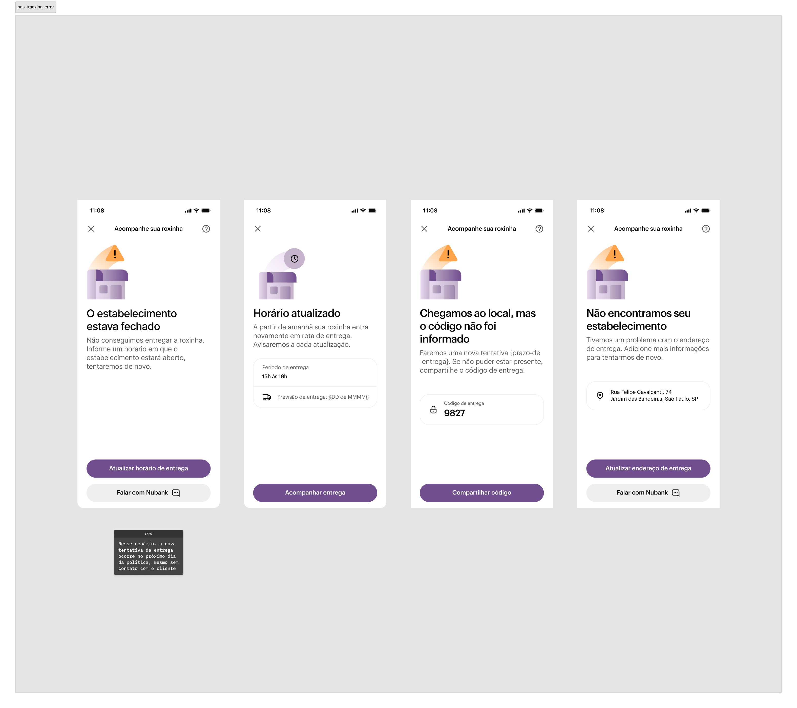
Cenários de erro mapeados no rastreio.
Ativação
O primeiro contato físico com a marca. O risco é o de qualquer produto novo: fricção no começo compromete o uso contínuo.
Aqui o trabalho foi validar se as condições que tínhamos permitiam a estratégia que queríamos.
A diferença aqui era que o lojista já tinha relação com o Nubank pelo app — e foi disso que partimos. O princípio: “você já sabe usar, é igual ao seu app.” Familiaridade como redutora de fricção, em vez de um modelo mental novo. Tom celebratório com sobriedade: parceria, não festa. Cada passo educa sem infantilizar.
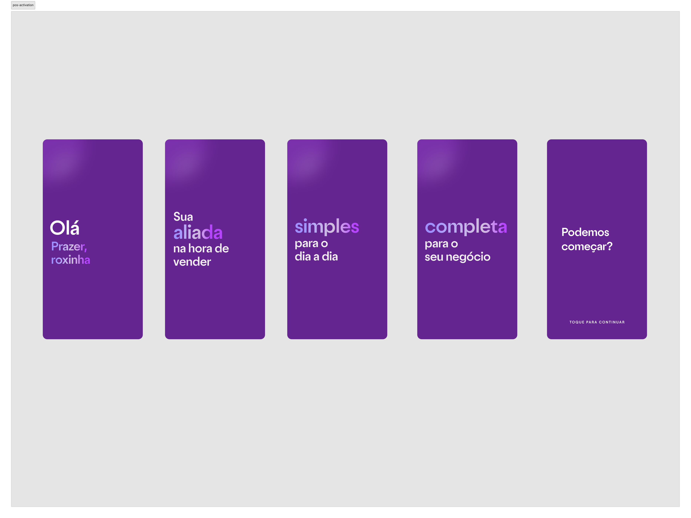
A jornada de ativação, partindo da familiaridade com o app.
O desafio era duplo, e é o mais específico deste projeto. Era a primeira vez que design e engenharia projetavam para um dispositivo que não é celular nem desktop, o que trouxe restrições de hardware inegociáveis: estabilidade de performance e de bateria. E, dentro delas, criar uma experiência à moda do Nubank sem onerar essa estabilidade.
Isso exigiu entender os momentos em que o aparelho é ligado: a primeira vez, quando tudo é novo, e os usos recorrentes, quando a experiência precisa ser rápida e invisível. Para o primeiro boot havia critérios técnicos a cumprir — uso de animação, uso de imagem, e sobretudo quantos segundos aquele fluxo poderia durar sem prejudicar a percepção de performance.
E aqui aconteceu a parte que mais me interessa contar. A informação que tínhamos sobre o primeiro boot era simples e fechada: ao ligar, a máquina exibe uma tela estática por seis segundos — fundo preto, uma linha pequena em branco escrito “ligando”. Isso chegou até nós como característica do hardware. Um fato, não uma decisão.
Resolvemos questionar. Enquanto a designer trabalhava o canal com a parceira, o PM e a engenharia para estressar esse ponto e descobrir o que era de fato imutável, defini os critérios de narrativa daquele primeiro momento e prototipei uma proposta de tela, explorando as narrativas possíveis. Levamos essas alternativas para o Cursor e geramos variantes ali, porque o que queríamos naquele instante não era uma tela: era movimento.
O desfecho foi organizacional antes de ser de produto. Conseguimos aval da liderança para participar da conversa do jeito que achávamos necessário — indo direto ao fabricante do hardware, na China, que era quem de fato podia dizer o que aqueles seis segundos permitiam.
A conversa ficou em aberto. Não cheguei a saber o que o fabricante responderia sobre aqueles seis segundos — mas o encaminhamento já era o ponto.
O desfecho
Uma restrição que o time inteiro tratava como imutável passou a ser uma pergunta endereçada a quem podia respondê-la.
Dados e premissas
Esta é a parte do projeto que mais me marcou, e a que eu mostraria primeiro se pudesse mostrar só uma.
Parte das decisões acima foi orientada por dado — interno de PJ e de mercado. Outra parte foi assumida como verdade para o trabalho poder seguir, num contexto de alta velocidade e mudança constante nos times.
Em vez de deixar isso implícito, documentamos: um mapa separando o que era dado confirmado do que era premissa assumida, com o momento em que cada premissa seria testada — em usabilidade ou nos aprendizados contínuos do produto.
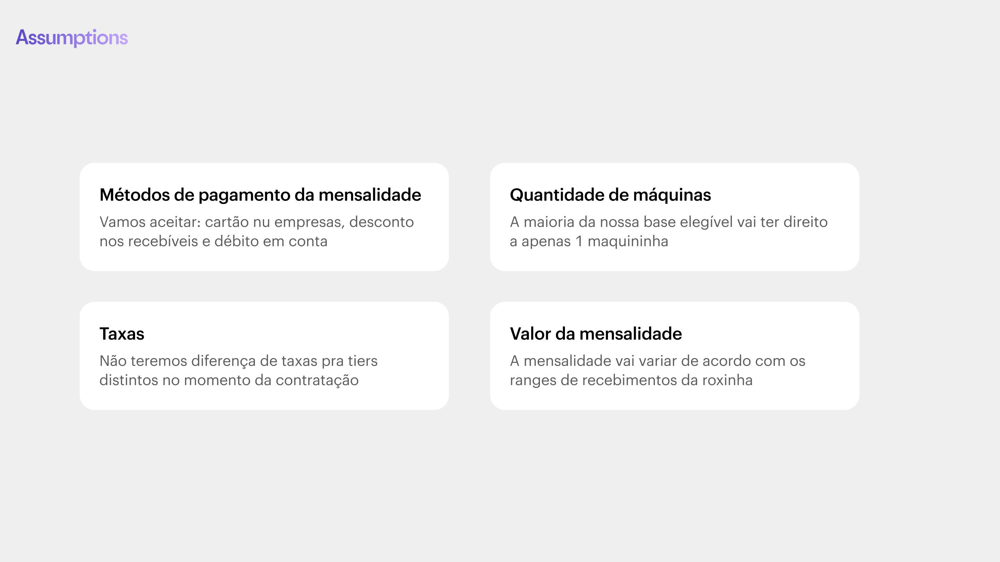
O mapa de dados e premissas: o que era dado confirmado, o que era premissa, e quando cada premissa seria testada.
Fizemos isso porque, em produto que ainda não existe, a diferença entre saber e supor é a única coisa que impede uma aposta de virar fato por repetição.
Quando a mesma premissa é dita em três reuniões, ela começa a soar como pesquisa.
O mapa era o que mantinha o time honesto — inclusive comigo.
Guidelines de conteúdo
Com múltiplos times trabalhando em paralelo e uma tensão constante entre a linguagem da parceira e a da marca Nubank, criei as primeiras guidelines de conteúdo do produto como entregável formal: vocabulário controlado, tom de voz por momento da jornada, estrutura das mensagens de erro e princípios de narrativa entre canais.
Documentadas no Figma e no Confluence, e integradas ao fluxo de trabalho com IA do time — porque guideline que mora num documento que ninguém abre não é guideline.
1
A jornada end-to-end
Do pedido à ativação.
2
Os fluxos em tela e o protótipo
Das três jornadas.
3
As comunicações transacionais
Mapeadas e criadas.
4
As guidelines de conteúdo do produto
O que eu faria diferente
Investiria mais cedo em duas coisas: os princípios de design inegociáveis e um protocolo de gestão do conhecimento com a parceira.
Não foi incomum a mesma informação chegar de formas diferentes para pessoas diferentes de design e produto, gerando retrabalho e ciclos desnecessários de validação. Uma forma acordada, desde o primeiro dia, de como capturar, validar e circular os aprendizados da parceira teria reduzido bastante esse atrito.
Não era só percepção minha: o próprio registro de riscos do projeto passou a listar, mais tarde, o descompasso na documentação técnica da parceira como risco alto, com uma mitigação formal — formalizar por escrito os prazos após cada entrega. O problema era real e estruturante; eu só o encontrei antes de existir processo para ele.
Em projeto com múltiplas interfaces e alta dependência externa, a clareza operacional é, ela mesma, uma decisão de design.
Aprendi isso duas vezes: aqui, e no projeto de contestação, com outro parceiro e o mesmo padrão.
Projeto em fase pré-lançamento. Telas e artefatos exibidos com fins de portfólio, mantendo confidencialidade sobre informações estratégicas e comerciais.